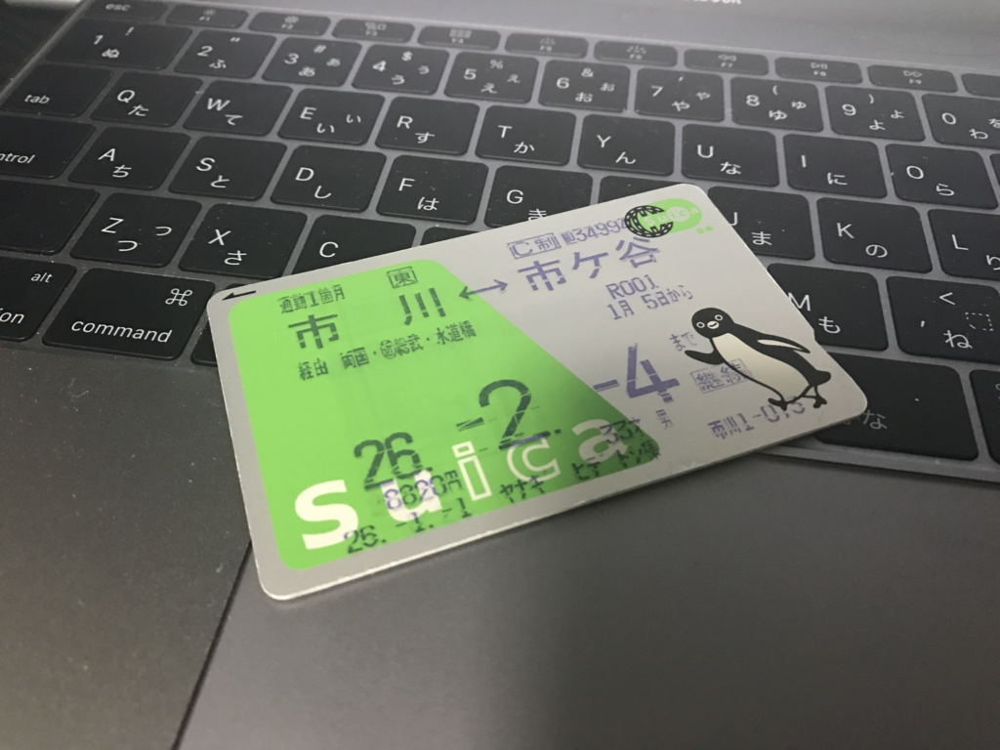
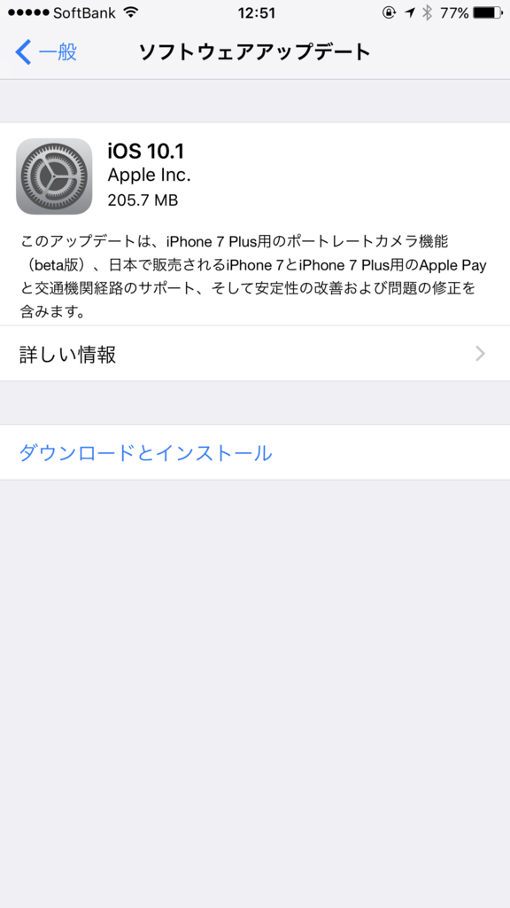
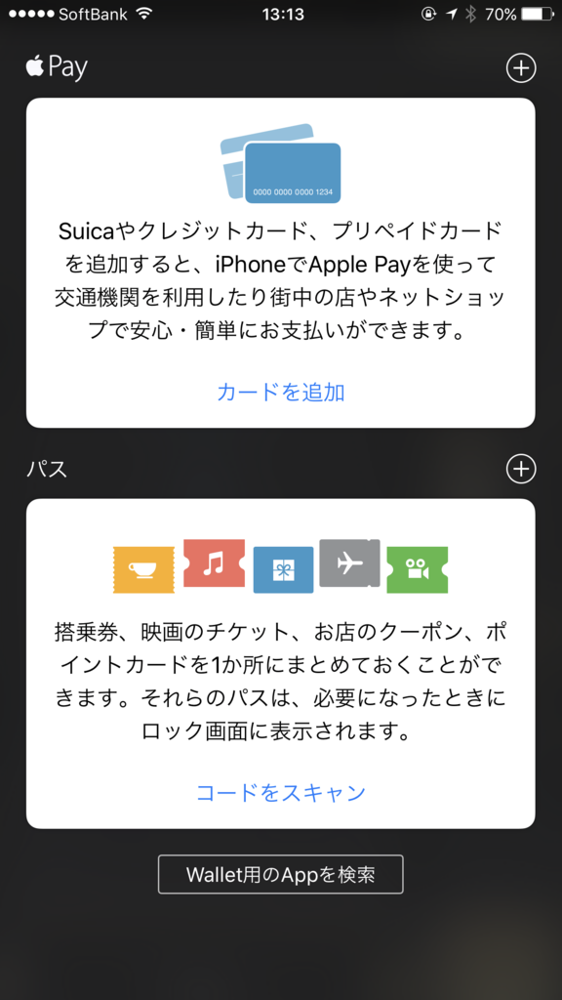
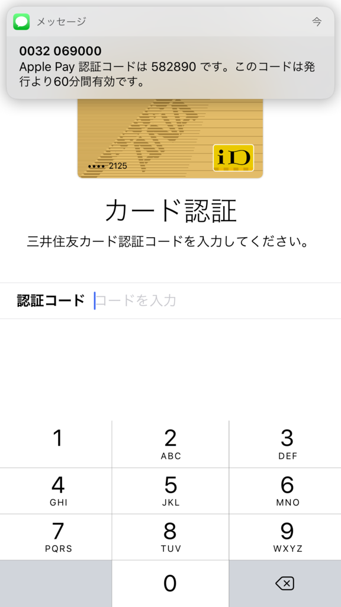
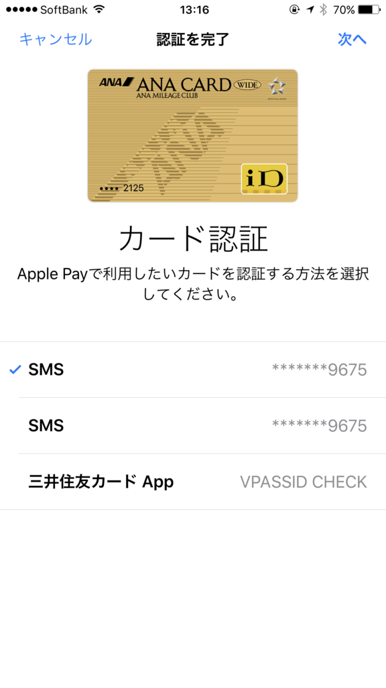
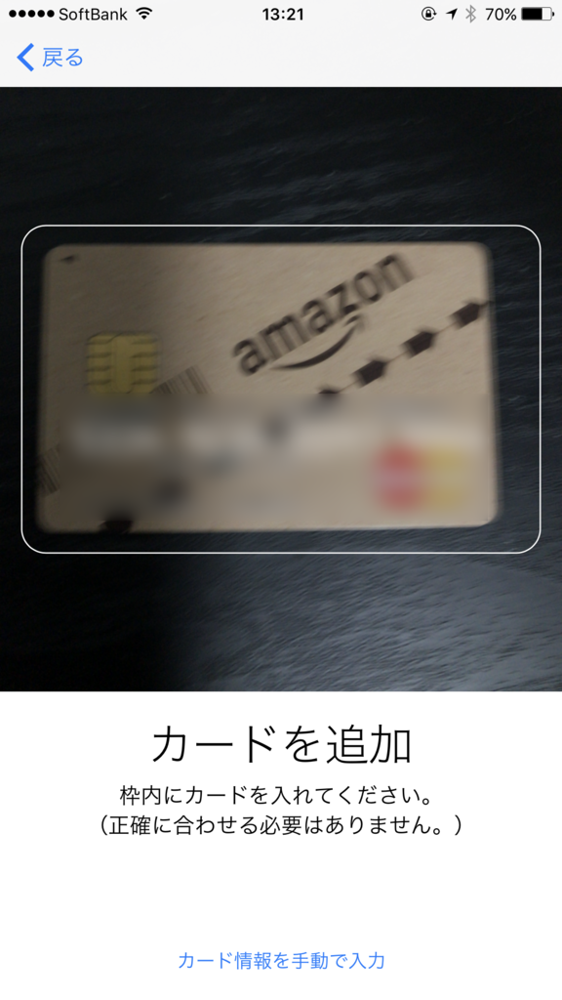
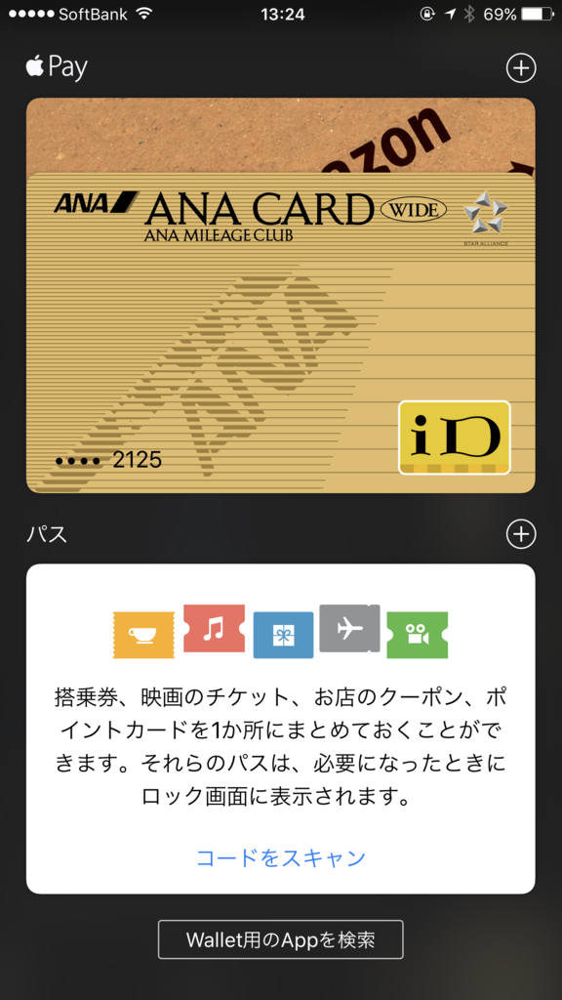
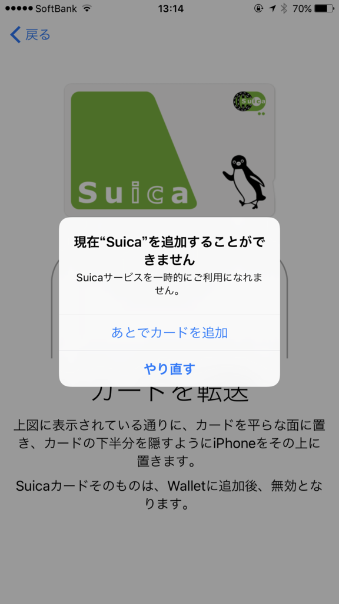
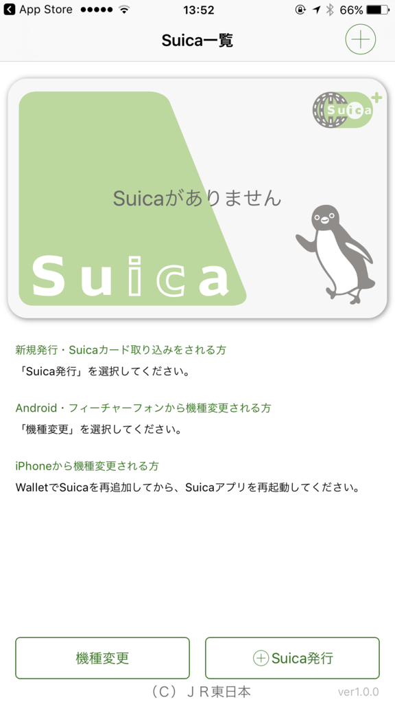

あっぽーぺーにさっそくカードを登録してみた
執筆日時：

Apple Pay が使えるようになったので、手持ちのカードを登録してみた。
まずは OS のアップデート
 
とりあえず iOS を 10.1 へアップデート。これで「Wallet」アプリにカードを登録できるようになるらしい
カードの登録
現在の手持ちのカードは以下の通り。
- ANA ワイドゴールドカード（VISA、三井住友カード。Apple ID の決済に利用）
- Amazon MasterCardクラシック（Master、三井住友カード）
- SUICA（記名式、東京にいるときに定期券として使っていた）
 
Apple ID の決済用として登録していた ANA カードは、セキュリティコード＋（SMS などを利用した）認証コードを入れるだけで登録できた。
 
新規登録となる Amazon のカードは、写真を撮ってカード番号を読み取るタイプだった。これも楽ちん。オンラインショッピングで毎回カード番号を入れてるのがアホクサくなる簡単さだな！
ちなみに、この2つのカードは 三井住友カード が発行しているので、コンビニなどで iD として利用できる。でも、クレジットカードとして使えるのは MasterCard の Amazon カードの方だけっぽい。Apple Pay を利用した Suica チャージができるのは Amazon のカードの方だけだった（オートチャージサービスへの登録は可能みたいだけど）。マイルを貯めるために ANA ワイドゴールドカードをメインにしつつも、それが使えないときは Amazon カードを使うことになると思う。
ついでなので 5000円もらえるキャンペーンにもちゃんとエントリー。
早い者勝ちっぽいので、乞食したい人は今すぐ Go だ。
あと、Amazon Mastercard の還元率もなぜか上がってた（クラシックは 2％。ゴールドは 2.5％）。Apple Pay がらみなのかどうかは知らないけど、お得になるのはうれしいな。
 
一方 SUICA の登録は、モバイル SUICA がダウンしていたらしく、なかなかうまくいかなかった。JR 東日本の「Suica」アプリを使ってカードを新規に登録すればよさそうだったけど、カードが増えても仕方ないと思い、夜まで待って登録。登録したカードはデータが iPhone に移行されるらしいので、捨ててしまってもよい。かなり長い間使ったけど、これでおわかれだなー。おおきにおおきに。
「Suica」アプリをいじくってたらいつの間にか 1000円 チャージされてたんだけど、この辺りは使いながら追々マスターしていこうと思う。まずは近所のローソンで iPhone のかざし方の修行をしてくる( ｰ`дｰ´)ｷﾘｯ